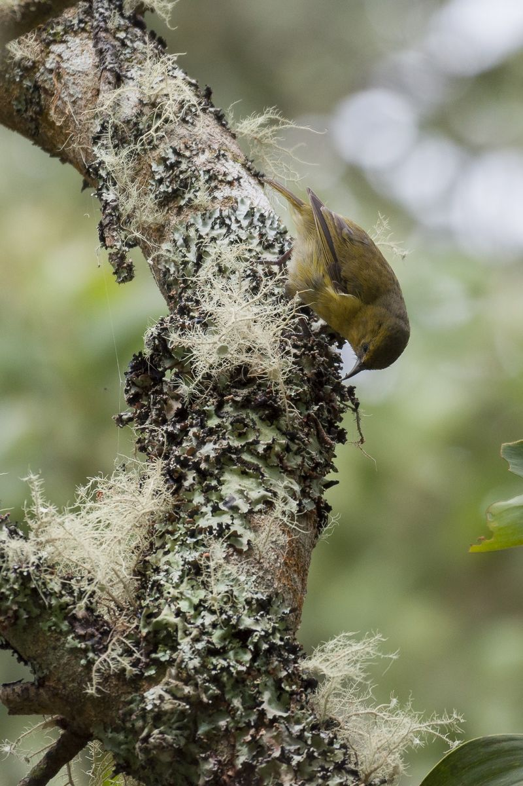

Activity, Magnetism, Atmospheres and Keplerian
Investigations of Host stars and Interactions
A six-year survey of stars and their planets with Wenaokeao, the simultaneous
use of ESPaDOnS and SPIRou at CFHT: every visit records the full optical and
near-infrared spectrum of a star, in polarized light, at high resolution.
Hawaiʻi ʻamakihi (Chlorodrepanis virens) at Puʻu Laʻau, on the slopes of Maunakea, August 2015. Photo: Étienne Artigau, Macaulay Library ML22535891.
6 years
12 semesters of monitoring, snapshots and time-critical sequences
0.37 to 2.45 µm
in a single exposure, from the blue to the K band
R ≈ 70 000
spectral resolution, with circular and linear polarimetry
5 work packages
from the nearest exoplanets to evolved stars
The instrument
One exposure, two spectrographs
ESPaDOnS
covers the optical domain and
SPIRou the near-infrared.
Both are spectropolarimeters. Observed together on the 3.6 m telescope on Maunakea,
they give a continuous, simultaneous view of thousands of spectral lines, which
ʻAmakihi will exploit systematically for the first time.
BVRIYJHK
0.40.50.60.81.01.52.0 µm
ESPaDOnS, 0.37 to 1.05 µm
SPIRou, 0.95 to 2.45 µm
Wavelength coverage of Wenaokeao (logarithmic scale). Each visit yields an optical and a near-infrared spectrum taken at the same moment, by default in spectropolarimetric mode.
Activity, recorded at the same moment
Optical activity indicators (Ca II H&K, Hα, Na D) are measured at the exact time of each near-infrared radial velocity, so stellar activity can be modelled and separated from planetary signals.
A chromatic lever arm
Velocity shifts caused by stellar activity depend on wavelength; those caused by planets do not. A baseline from 0.37 to 2.45 µm separates the two.
Magnetic fields across the spectrum
Zeeman signatures from thousands of lines in both domains, with the stronger Zeeman broadening of the infrared, constrain both large-scale and small-scale magnetic fields.
Homogeneous by design
One observing mode across all work packages, so every star observed feeds the same uniform legacy dataset.
Science
The questions
ʻAmakihi brings together stellar and exoplanet science around a few broad questions.
Which planets, and in particular which temperate rocky planets, orbit the stars closest to the Sun, and in what kind of systems?
What are exoplanets made of, and how did they form?
How diverse are the dynamics and the chemistry of exoplanet atmospheres?
What role do magnetic fields play in the formation of stars and planets, and along stellar evolution?
Organisation
Five work packages
Each work package defines its own sample, observing strategy and analysis, while sharing data and methods with the others: exoplanet hosts need well-characterised stars, and stellar studies use every star the survey observes.
WP1
Nearby exoplanets
Complete the census of small planets around the nearest M and K dwarfs, within 10 pc: the systems that the coming extremely large telescopes will be able to characterise. A second axis follows systems hosting a massive outer planet, including those revealed by Gaia, to learn how inner rocky planets form alongside giants.
Near-infrared velocimetry
Solar neighbourhood
Gaia DR4
WP2
Planetary interiors
Measure the masses of transiting planets. One programme builds the first mass-metallicity relation for giant planets around M dwarfs, a direct test of how giant planets form around low-mass stars. Another delivers the precise masses that Ariel and PLATO targets need for their atmospheres and interiors to be interpreted.
Transiting planets
Ariel and PLATO
Giant planet formation
WP3
Young magnetic stars and planet formation
Monitor a sample of young pre-main-sequence stars, from 0.3 to 4 solar masses, over several seasons: map how their magnetic fields evolve and channel accretion from the disk, and search for massive young planets in the inner disk.
Zeeman-Doppler imaging
Magnetospheric accretion
Young planets
WP4
Exoplanet atmospheres
Study hot Jupiters in three dimensions, search for the polarisation signature of exoplanet magnetic fields, follow hydrogen and helium escape together with stellar activity, and prepare reflected-light spectroscopy for the ELT era.
High-resolution spectroscopy
Atmospheric escape
Planetary magnetism
WP5
Stellar magnetism across the HR diagram
Follow magnetism through the life of stars: young cool stars in their first billion years, pulsating stars where asteroseismology probes the interior, and evolved supergiants and AGB stars. WP5 also derives the magnetic diagnostics of the stars observed by the exoplanet work packages.
Spectropolarimetry
Asteroseismology
Stellar evolution
Data
A legacy dataset
Beyond its own science goals, ʻAmakihi will leave the community a homogeneous set of high-resolution polarized spectra of several hundred stars, with long time series for many of them.
Reduced spectra and their metadata distributed through the Canadian Astronomy Data Centre (CADC); spectropolarimetric data through PolarBase.
Value-added products: spectral templates, co-added spectra, line-by-line velocities, activity indicators and magnetic diagnostics.
Radial-velocity time series follow CFHT's proprietary-period policy; products useful to independent science are released progressively.
Background: the ESPaDOnS and SPIRou work the survey builds on is listed on the publications page.
Support to CFHT operations: pipeline development for Wenaokeao, scheduling and survey-monitoring tools, and regular follow-up of data quality.
Team
The people
ʻAmakihi gathers the ESPaDOnS and SPIRou user communities: about 130 researchers from nearly 50 institutes, mostly in France and Canada, with colleagues from Brazil, Hawaiʻi and elsewhere. Many of them built these instruments, their pipelines and their operations.
The survey is run by a steering committee that includes the work package leads, representatives of the participating agencies and of CFHT.
Yearly workshops open to the whole community, alternating between France and Canada, with remote participation.
Early-career researchers: a few hours per semester open to an internal call for projects compatible with the survey plan.
Students from Hawaiʻi are welcome to be trained and involved in survey operations and science.
The name
Why ʻAmakihi?
Every ʻAmakihi spectrum is taken from the summit of Maunakea, and a Hawaiian name is our way of honouring the place that makes the survey possible.
The ʻamakihi is a small yellow-green honeycreeper and one of the most common of Hawaiʻi's native birds: where many native species have vanished, it has weathered the upheavals of the islands remarkably well. Keep an eye out for one in the māmane trees on the slopes of Maunakea.
Its name also reads as an acronym for the survey's themes: Activity, Magnetism, Atmospheres and Keplerian Investigations of Host stars and Interactions.

Hawaiʻi ʻamakihi foraging on a lichen-covered trunk, Puʻu ʻŌʻō trail, island of Hawaiʻi, May 2018. Photo: Étienne Artigau, Macaulay Library ML102747991.
Members' area
Organisation, data, decisions and working notes are kept in a private wiki, readable on password-protected team pages. Editing the wiki requires a GitHub account invited to the project.